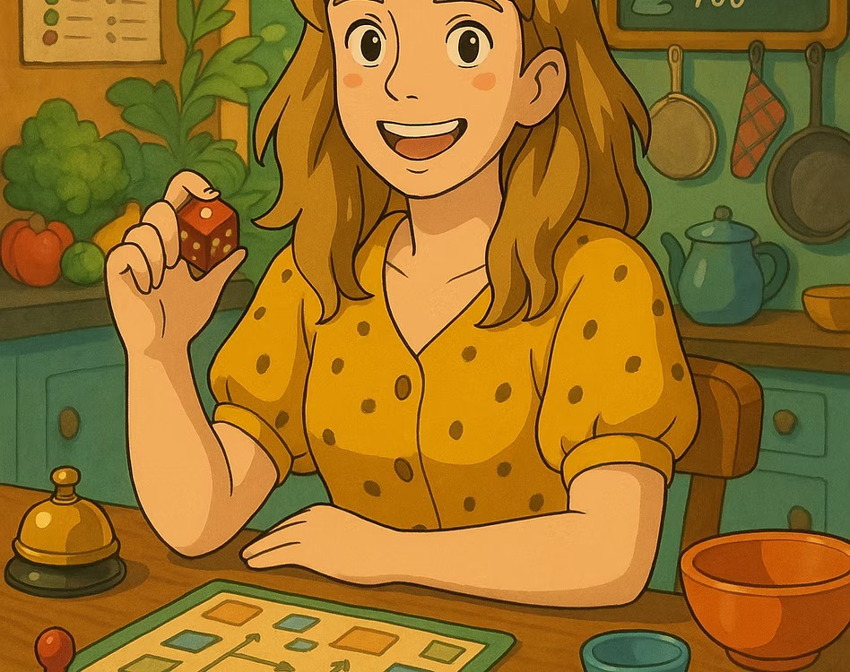
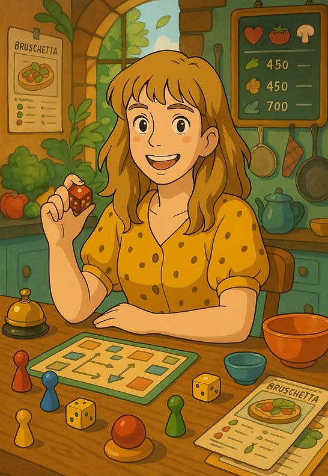
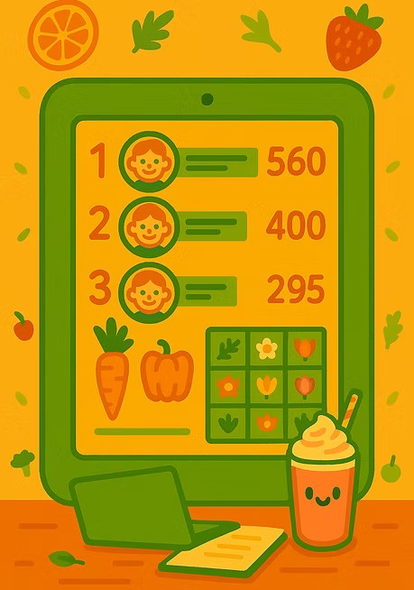

"Fantasy is a necessary ingredient in living — it's a way of looking at life through the wrong end of a telescope." — Dr. Seuss


I'm a game designer and product consultant specializing in interactive and experiential game design — across digital apps, physical play, and everything in between.
My career spans 15+ years across mobile game studios, edtech, e-commerce, and independent development. I've shipped products for kids, built a 6-figure experiential game business from scratch, and launched two mobile apps solo on the App Store and Google Play.
In 2019 I founded Food Games — a gamified cooking workshop company that turned the kitchen into a competitive, joyful arena for corporate teams and schools. I bring the same energy to every project: hands-on experience, cross-disciplinary thinking, and a deep belief that the best ideas live at the edge of what's expected.
From core loop to full GDD — I write clear, buildable game specs for mobile and casual games, with a focus on player retention and monetization hooks.
Monetization strategy, feature prioritization, and live ops planning. I help studios and indie devs make smarter product decisions grounded in player behavior.
Physical/digital hybrid experiences, edtech gamification, and corporate workshops. I specialize in turning non-game contexts into deeply engaging play.
A calming memory-matching puzzle game featuring hand-illustrated succulents. Built solo end-to-end — concept, design, development, and publishing on App Store and Google Play. Integrates AdMob, ATT, and progressive difficulty across 4 levels.
Play the game →An interactive Hebrew cooking adventure app for children ages 6–10. Features 4 mini-games per recipe, freemium model with IAP packages, and a certificate reward system. Built with Capacitor + vanilla JS.
Try the app →
A deck-building inspired culinary team-building company I founded and scaled to 6-figure annual revenue, serving 1000+ participants from companies including Amazon, Riskified, and Weizmann Institute.
A gamified mobile platform for customizing and ordering printed cakes. Designed the full UX flow, game mechanics, and user journey from creative play to real-world delivery — accessible to users aged 5+.
Pokémon GO-inspired AR mobile game featuring friendly dinosaur characters. Defined feature specs, PRDs, and game mechanics for both Dino Go and Foot Pool at WhaleApps, managing remote dev and art teams.
A culinary quest app set in Tel Aviv's Levinsky Market. Players navigate historical and cultural landmarks through interactive riddles. Built the concept, UI design, and full game in Construct engine.
How we used deck-building mechanics and competitive cooking to unlock creativity, collaboration, and genuine fun in corporate teams.
Designing a live, large-scale experiential game for hundreds of players — what works, what breaks, and what you can't plan for.
Exploring how game mechanics — progression, stakes, feedback loops — can transform cooking education into something children remember.
Open to consulting, short-term engagements, and game design collaborations worldwide.
michalskurnik@gmail.com